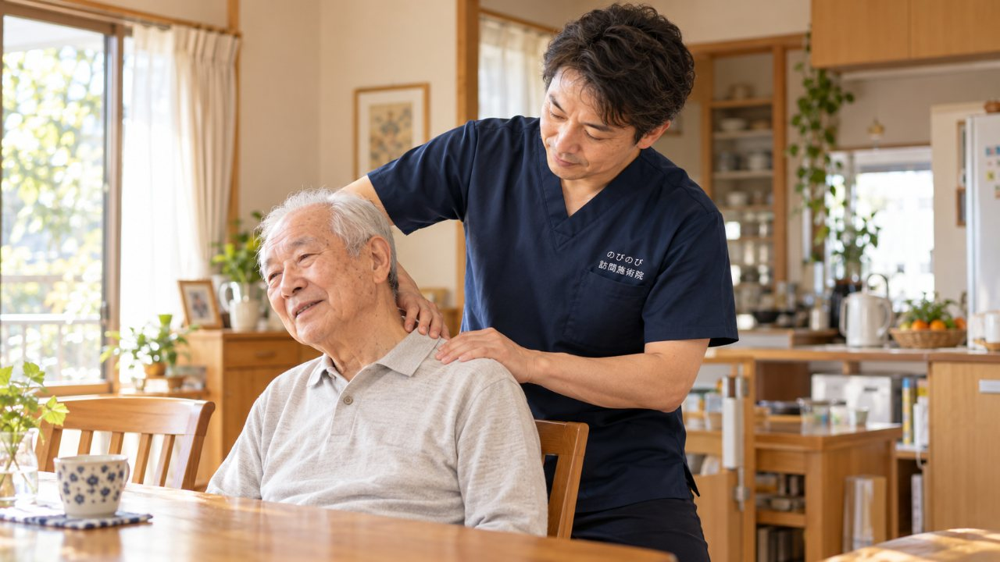
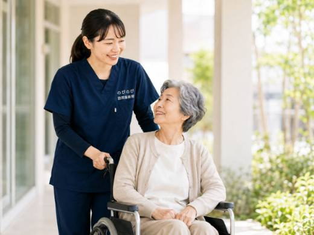
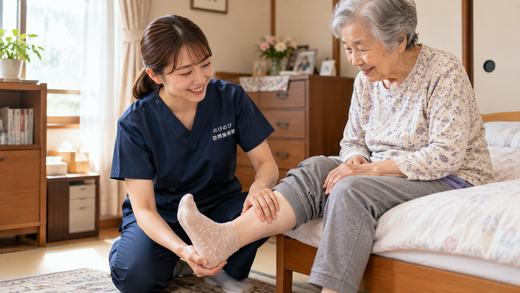
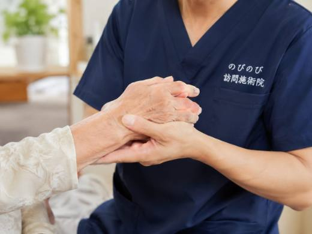

首のうしろから後頭部、こめかみのあたりへと広がるように重く痛む。首すじのこりや動きの悪さが引き金になっていることがあります。頭そのものの病気ではなく、首から連なって頭が痛む、というタイプです。頭痛そのものが保険の対象になるわけではありませんが、背景にある首や肩のこわばりについては、ご自宅にうかがう鍼灸・マッサージでお手伝いできる場合があります。
先に要点を。頸性頭痛そのものが、そのまま保険の対象になるわけではありません。首や肩の慢性的なこりや痛みについて医師が鍼やお灸を必要と認め、通院がむずかしい状態であれば、はり・きゅうの医療保険の対象になる場合があります。頭痛はその首のこりに伴って出ているもの、という位置づけです。これまでにない突然の激しい頭痛、手足の力が入らない、ろれつが回らないといったときは、すぐに医療機関を受診してください。
後頭部から締めつけられるこの頭痛、首が原因かもしれません
頭痛と一口に言っても、その起こり方はさまざまです。なかでも、首のうしろから後頭部、こめかみのあたりへと広がるように重く痛むタイプは、首すじのこりや動きの悪さが引き金になっていることがあります。長く同じ姿勢でいたあと、首を動かしたときに痛みが強まる、肩や首のこりと頭痛がいつも一緒にやってくる、といった特徴が見られます。読書や、寝たきりに近い姿勢が続く高齢の方でも、首まわりに負担がかかり続けることで起こりやすくなります。頭そのものの病気ではなく、首から連なって頭が痛む、というのがこのタイプの見方です。
突然の激しい頭痛や手足の力が入らないときは、すぐ医療機関へ
首から来る頭痛のケアをお話しする前に、注意していただきたいことがあります。これまで経験したことのない突然の激しい頭痛、頭を殴られたような痛み、手足に急に力が入らない、ろれつが回らない、意識がもうろうとする、高熱をともなう。こうした場合は、くも膜下出血や脳卒中、髄膜炎など、緊急を要する病気の可能性があります。首のこりのせいと決めつけず、すぐに救急や医療機関を受診してください。鍼やお灸は、こうした急を要する頭痛に対応するものではありません。あくまで、原因が調べられたうえで残る、慢性的な首こりからの頭痛に寄り添うためのものです。
慢性頭痛と、首から起こる頭痛はどう違うのか
頭痛にはいくつかのタイプがあります。ズキンズキンと脈打つように痛み、光や音がつらくなる片頭痛、頭全体が締めつけられるように重い緊張型頭痛。首から起こる頭痛は、この緊張型と近い部分がありますが、首の動きや姿勢との結びつきがより強いのが特徴です。首を回すと痛みが変わる、うつむき姿勢が続くと出てくる、というように、首の状態と頭痛が連動します。もちろん実際には複数のタイプが混ざっていることも多く、見分けは簡単ではありません。こうしたことから、まずは医療機関で頭痛の性質を確かめておくことが、その後のケアの土台になります。
頸性頭痛は鍼やお灸の保険対象になりますか
首から来る頭痛そのものが、そのまま保険の対象になるわけではありません。ただ、首や肩の慢性的なこりや痛み、頸椎症など首まわりの不調で、それが慢性的に続いており、医師が鍼やお灸での治療が必要と認めて同意書を書いてくれれば、はり・きゅうの医療保険が使えます。頭痛はその首のこりに伴って出ているもの、という位置づけです。ご自身の症状が対象になるかどうか迷うときは、まずご相談ください。同意書のやりとりは当院がお手伝いしますので、手続きの複雑さを心配されなくて大丈夫です。
固まった首すじに、鍼とお灸はどう働くのか
首から起こる頭痛の背景には、後頭部から首、肩へと連なる筋肉のこわばりがあることが多いものです。この筋肉が固く縮むと、そこを通るめぐりが滞り、頭の重さやしめつけ感につながります。鍼やお灸で、こわばった首すじや肩の筋肉、後頭部のつけ根あたりに働きかけ、こわばりをゆるめてめぐりをうながすケアを行います。頭の重さが軽くなったと話される方もいますが、感じ方には個人差があります。強く押して無理にほぐすのではなく、その日のこりの具合を確かめながら、じんわりとゆるめていくのが訪問での進め方です。
頭が痛いのに通院、をくり返さなくていい
頭痛を抱えている方にとって、痛みを我慢しながら出かけること自体が大きな負担です。電車や車の揺れ、待合室の明るさや騒がしさ、順番を待つあいだの緊張。どれも頭痛にはこたえます。せっかく治療に行っても、移動でかえって頭痛が強まってしまった、という声も耳にします。訪問なら、静かな自室で、横になったり楽な姿勢をとったりしたまま首や肩の施術を受けられます。出かける負担がないぶん、体を休めながらケアを続けられますし、痛みが出やすいご自身のリズムに合わせて受けられるのも在宅ならではです。
枕や姿勢を見直して、首の負担を減らす
施術と合わせて、暮らしのなかで首をいたわる工夫も助けになります。合わない枕は首すじに一晩じゅう負担をかけるので、高さや固さを見直してみる。長くうつむく姿勢が続かないよう、こまめに首を軽く動かす時間をつくる。冷房や冬の冷えで首すじを冷やさないよう、一枚巻いておく。こうした小さな心がけの積み重ねが、施術で楽になった状態を保つ助けになります。うかがうたびに、その方の生活に合った首の休め方や姿勢のコツをお伝えし、ご家族にも共有していきます。
首や肩の施術を続けている方の様子
首の後ろから肩甲骨のあいだがゆるむと、頭を支える負担が減り、枕に頭をあずけやすくなります。首すじのこわばりは、頭の重さや寝つきにも関わってきます。一方で、変わらないとおっしゃる方もいます。感じ方には個人差があり、どなたにも同じ変化をお約束できるものではありません。それでも、首から来る頭痛と長くつきあってきた方が、少しでも頭の重さから解放される時間を持てるなら、施術を続ける意味があると考えます。
首や肩への施術は1回いくら？費用の仕組み
医療保険を使うので、お支払いは自己負担分のみです。1回の総額は3,950円で、1割負担の方でおよそ395円が目安になります。特別に安くしているのではなく、保険にもとづく正規の料金です。さらにこの費用は、介護保険の区分支給限度額とは別の枠になります。介護のサービスを目いっぱい使っている方でも、その枠とは別に受けていただけます。対応エリア内であれば出張費は別にかからず、集金は月ごとにまとめて行い、その月の施術の内訳がわかる明細をお渡しします。ふたつの保険がどう分かれているかはこちらのページで説明しました。
受けはじめるまでの流れ
はじめに、お電話などで、頭痛の出方や首・肩のこりの様子、通院の状況、かかりつけの医療機関をお聞かせください。医師の見立てをふまえ、首・後頭部・肩へ鍼灸でできることをご説明します。急を要する症状があるときは、受診を先におすすめします。同意書の段取りは当院が進めますので、気になる点はお尋ねください。
よくある質問
首から来る頭痛は鍼灸で治りますか？
頭痛そのものを鍼やお灸で治せると言い切ることはできません。首や肩のこわばりを和らげ、頭の重さやしめつけ感に向き合う位置づけです。これまでにない突然の激しい頭痛や、手足に力が入らないなどの症状があるときは、首のせいと決めつけず、すぐに医療機関を受診してください。
薬を飲んでいても施術を受けられますか？
頭痛薬や他のお薬を飲んでいる方でも、多くの場合は受けていただけます。飲んでいるお薬の内容は施術の前に教えてください。鍼灸は薬に取って代わるものではなく、首や肩のこわばりを和らげて体を楽に保つための位置づけです。
頸性頭痛でも保険で受けられますか？
首肩のこりにともなう慢性的な痛み・こわばりについて医師が必要と認め、通院がむずかしければ対象になる場合があります。頭痛そのものが対象になるわけではありません。
どこを施術しますか？
頭痛の背景になりやすい首・後頭部・肩のこわばりを、はりや手技で和らげます。
費用は1回いくらですか？
1回の総額は3,950円で、自己負担は負担割合の分のみです。1割の方でおよそ395円が目安になります。対応エリア内であれば出張費は別にかかりません。
どのあたりまで来てもらえますか？
豊中・吹田・茨木・箕面・摂津・池田、尼崎・伊丹、大阪市の淀川区・東淀川区・都島区・北区・旭区にうかがっています。

慢性的な頭痛・頭の重さがつらい高齢の方へ｜訪問鍼灸マッサージでできること
続きを読む
高齢の方の足首の痛み・捻挫のあとの不安定さと在宅ケア｜訪問鍼灸マッサージ
続きを読む
足首の痛み・動かしにくさ（変形性足関節症）でお悩みの方へ｜訪問鍼灸マッサージ
続きを読む
手首の痛みや腱鞘炎で家事や介護がつらい方へ｜訪問鍼灸マッサージという選択肢
続きを読む
変形性頸椎症で首の痛みや動かしにくさがある方へ｜訪問鍼灸マッサージ
続きを読む